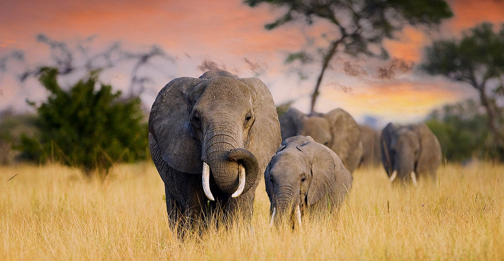

Background/Overview
Human-elephant conflict (HEC) is a pressing conservation challenge in Southern Africa, where growing human populations increasingly overlap with recovering elephant populations. As communities expand into traditional elephant habitats, incidents such as crop raiding, property damage, and even loss of life have become more common, threatening rural livelihoods, elephant recovery, and eroding support for conservation. However, policymakers have limited tools to track and respond to patterns of HEC now and moving towards the future.
To help anticipate and manage these challenges, I worked with a research team as an Arnhold Environmental Graduate Fellow to develop a multi-model framework to identify the current drivers and predict future patterns of HEC across a transboundary landscape in Southern Africa. Using a dataset of reported conflict events from 2004 to 2020, we combined causal inference methods with species distribution modeling to capture both the mechanisms and spatial patterns underlying conflict risk. This analysis is part of a paper I co-authored (currently in review), which presents one of the first regional-scale, multi-model forecasts of future HEC under multiple socioeconomic and climate scenarios. My main contribution to the project focused on leading the development of 4 maximum entropy (MaxEnt) models to predict the current and future probability of HEC occurrence across the landscape. MaxEnt, a machine learning method widely used in ecological modeling, estimates the relative likelihood of an event based on known observations and environmental conditions. We used this approach to model the spatial distribution of past HEC incidents and then project future conflict probabilities under different land use, population, and climate change scenarios.
By integrating causal inference and machine learning, our work provides a framework to assess the underlying drivers and spatial hotspots of HEC now and under future scenarios, offering local decision-makers valuable information to mitigate HEC through proactive landscape planning. This project was an exciting opportunity to apply spatial modeling and machine learning techniques to a real-world conservation issue with direct implications for both human and elephant well-being.
Data/Code
This analysis involved various datasets, including HEC occurrence records, landscape characteristics (e.g., land cover, roads, rivers, fences, elephant core areas, etc.), historical climate data, and global change estimates under various shared socioeconomic pathways (SSP) and representative concentration pathways (RCP) listed above. All of the data and code used for the MaxEnt analysis can be found in the maxent.zip folder of our team’s Zenodo repository.
Methods
To predict where human-elephant conflict (HEC) is most likely to occur now and in the future, we used a Maximum Entropy (MaxEnt) modeling approach. MaxEnt is a machine learning tool commonly used in spatial ecology to map where species are likely to occur based on known observations and environmental conditions. In this project, we adapted it to model the probability of conflict events using records of crop-raiding incidents reported across Namibia’s communal conservancies from 2004 to 2020.
Because conflict patterns differ between the rainy and dry seasons, I built separate models for each. For every season, I combined the conflict data with sixteen environmental and human-related variables, including land cover type, population density, distance to roads, rivers, and protected areas, vegetation productivity, water availability, and topography. These variables helped describe the landscape conditions where conflict was more or less likely to occur. Since true “no-conflict” data don’t exist, I generated random background points within the same areas and time periods where conflicts were reported to help the model distinguish between conflict-prone and low-risk areas. I then used the dismo and ENMeval R packages to train and evaluate multiple MaxEnt models, and select the one that best balanced accuracy and complexity while avoiding overfitting. Finally, I transferred the best-performing model to predict future HEC under various climate, land-use, and population scenarios for 2025, 2055, and 2085. The specific scenarios we modeled HEC under for each year were:
SSP1-RCP2.6(‘Sustainability’)SSP2-RCP4.5(‘Middle of the Road’)SSP3-RCP7.0(‘Regional Rivalry’)SSP5-RCP8.5(‘Fossil-Fueled Development’)
These projections allowed us to map how and where the likelihood of human-elephant conflict is predicted to shift across the study area under different global change trajectories. For those interested in reading the full, detailed methodology for this analysis, I hope to share our paper here when it gets published!
Results
The results revealed consistent patterns across both modeling approaches. Regression-based estimates and the MaxEnt models predict a general increase in HEC towards the end of the century under all emission scenarios in both the wet and dry seasons, with conflict levels lowest under SSP1-RCP2.6 (“sustainability”), and highest under SSP3-RCP7.0 (“regional rivalry”). Areas experiencing rapid land conversion and human population growth are projected to face the greatest increases in conflict risk, while increasing aridity—particularly in core elephant habitats—also contributes to rising conflict probabilities within communal conservancies. These findings suggest that without targeted mitigation and land-use planning, HEC is likely to intensify across much of northern Namibia and the broader transboundary region in the coming decades. However, scenarios that limit land conversion showed substantially smaller increases in predicted conflict, underscoring the potential for proactive conservation and ‘elephant-sensitive’ land use planning to reduce future risks.
Figures
Here are some of the main figures I produced for the paper and as part of the analysis:

Acknowledgements
I’m thankful to have worked with such an awesome team on this project, especially Evan Patrick, Christy Yu, and our advisors Ashley Larsen, Joana Krieger, Nickolas McManus, and Patrick Roehrdanz.
Funding for my research in this project was supplied through the Arnhold UC Santa Barbara-Conservation International Climate Solutions Collaborative. Launched in 2021, the University of California Santa Barbara (UCSB) and Conservation International (CI) created this partnership to unify their demonstrated expertise and networks to conduct applied research with the goal of yielding tangible, progressive solutions, and to propel the careers of emerging environmental professionals. Along with launching numerous applied collaborative research projects, the Collaborative also created the Arnhold Environmental Graduate Fellows program - a powerful opportunity for graduate students to engage in collaborative research projects and receive mentorship from experts in the fields of environmental and ecological science.
This analysis supports the larger Spatial Planning for Climate Change: Land Use for Conservation, Agriculture, and Energy (SPARCLE) initiative with the Environmental Markets Lab (emLab) and CI. Under the SPARCLE umbrella, UCSB and CI are working to advance the science of spatial planning for projected ecosystem responses to climate change through several projects related to 1) climate-proofing conservation reserve networks, 2) evaluating the potential of co-locating multiple land uses (e.g. agriculture & renewable energy; “multifunctional landscapes”) and 3) elucidating how climate and land use change will impact human-wildlife conflict. The SPARCLE team is focused on Sub-Saharan Africa, a region expected to undergo rapid population growth this century which will place increasing pressure on its unique and biodiverse land systems.
Citation
@online{pepperdine2025,
author = {Pepperdine, Maxwell},
title = {Using Machine Learning to Predict Human-Elephant Conflict
{(HEC)}},
date = {2025-09-10},
url = {https://maxpepperdine.github.io/posts/2025-09-10-hec-maxent-namibia/},
langid = {en}
}